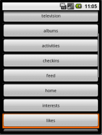
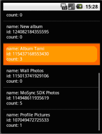
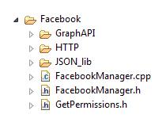

This example application demonstrates how to log on to Facebook from your application, how to retrieve JSON information, and how to manage posts (publish and delete posts). This application makes use of the MoSync C++ Facebook Library, C++ NativeUI Library, and C Widget API.
This application only works on Android and iOS (iPhone) devices.
|  |  | |
| Log on screen in the WebView widget | Information menu with NativeUI controls | Retrieving a photo album |
This example is included in the MoSync SDK installation in the /examples folder. For information on importing the examples into your workspace, see Importing the Examples.
When the application starts on a device with an Internet connection, the user is shown the log on screen to Facebook displayed in a WebView widget. After the user logs on to Facebook, the main menu is displayed providing the user with a host of options for working with Facebook.
By navigating through the menus, the user can retrieve information about the Facebook objects he or she owns (albums, activities, check-ins, posts, etc.), and also information about the user’s friends. Tapping on a retrieved Facebook object opens a menu with all the connections and publishing options that the Facebook Graph API provides.
For example, to see all the comments related to an album, the user taps albums > display album > album name > comments. Other options for albums include create album, retrieve photos, like, and unlike.
The user can post a link, a video, a picture, or a status message on their own Wall or on their friend’s Wall or on an event’s Wall. The user can create albums, checkins, events, comments, notes, event responses, and friend lists, delete comments, notes, and friend lists, and like/unlike any Facebook object.
The application uses MoSync Widget API buttons and menus to collect user input. Each button represent a request to Facebook that will be handled by the Facebook Graph API.
For example, when the activities button is clicked, an "activities" connection request for the current user is sent to the Graph API. The JSON data received from server is parsed and converted into a list of objects containing the name, id, category and date created fields.
When the user clicks a "create object " button, a request to create the object is sent to the Graph API. When the request has been completed, a screen with the ID of the new object is displayed. Similarly, when objects are deleted, the "Object removed" message is displayed.
All objects that a user can "like" and "unlike" according to the Graph API documentation can be liked or unliked in the FacebookDemo application.
The project is divided into folders:

The FacebookManager files contain the FacebookManager class. This is the class that is used for communicating with Facebook.
GetPermissions.h contains a GetPermissionsFor template class. This is specialized for each Facebook object type. It is used to fill a Set object with the needed permissions for retrieving connections for a Facebook object type or to publish an object of that type.
The /GraphAPI folder contains the implementation of the Graph API. It is divided into three subfolders:
The /HTTP folder contains all the low-level communication to the server (sending the request, retrieving the JSON data, and so on).
The /JSON_lib folder contains the MoSync JSON library.
Pressing the BACK button closes the application.